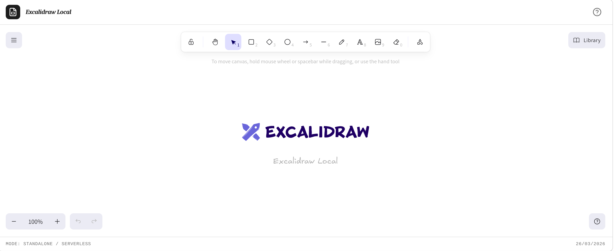
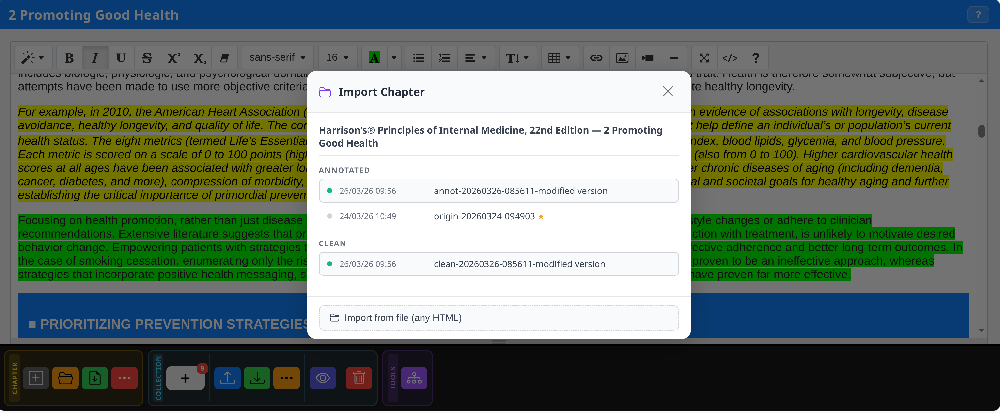

Two modes, one click
The Extract Chapter button in the reader toolbar opens a dropdown with two options. Noesis reads the book TOC hierarchy and assembles the document automatically, which opens directly in Noesis Editor.
Current chapter only
Extracts only the chapter displayed in the reader. Focused document, ideal for quick reading, targeted translation or annotation of a single section.
Current + all sublevels
Extracts the current chapter plus all nested sub-chapters, assembled in EPUB spine order into a single document. Ideal for broad sections or entire parts of an essay.

The extraction process
TOC structure parsing
Noesis reads the current TOC node and recursively identifies all child sub-nodes. For hierarchical extraction, the complete list of EPUB files to assemble is built.
Image loading and conversion
For each extracted chapter, Noesis accesses the image files inside the EPUB via JSZip, converts them to inline base64 and embeds them directly in the document. The result is a fully self-contained HTML with no external dependencies.
Payload generation and editor opening
The HTML content is injected into a JSON payload along with bookName, chapterId and chapter mode. Noesis Editor opens in a new tab via Blob URL with content already loaded.
Registration in noesisLibraryDB
The chapter is registered as a chapterRecord in noesisLibraryDB (IndexedDB) with a unique chapterId and an empty snapshots[] array, ready for the versioning system.
One environment for everything
Previously there were two separate environments: the "Extracted Chapter" and the "Report Editor". Today they are unified in Noesis Editor — a single Summernote editor managing reading, annotation, editing and export without intermediate steps.
Chapter mode
Opens with the extracted chapter content already loaded. Allows annotation with highlights, snapshot management, chunk collection and full text editing before export.
Standalone mode
Empty editor, accessible from the Library via the "Open Editor" button. Free use without a starting chapter — ideal for notes, drafts and independent documents.
3-colour annotation
Colour highlighting is available in Noesis Editor via native Summernote. Select the text and apply the background colour corresponding to the semantic category.
Yellow
Core concepts, definitions, key information to memorise. The primary colour of academic annotation.
Green
Examples, quotes, practical cases, empirical evidence. Distinguishes the concrete from the abstract in the text.
Pink
Technical terms, proper names, vocabulary to study. Perfect for language study and specialist nomenclature.
Remove highlight
Select the highlighted text and apply "no colour" to remove the highlight while keeping the text intact.
_clean.html (without highlights) and _annot.html (with highlights). You can return to any previous state of your study session. Snapshot documentation →The Editor button bar
The Noesis Editor has a structured toolbar at the bottom of the screen, divided into three sections: Chapter, Collection and Tools.

New
Resets the editor in place — empties the content area for a new document. Does not lose the current chapter in noesisDB.
Open
Opens a file picker to load an existing HTML file directly into the editor. Useful for reopening a snapshot saved on the filesystem.
Save Snapshot
The main snapshot operation. Generates two files simultaneously: _clean.html (no highlight colours) and _annot.html (with all highlights). Both are downloaded and also recorded in noesisDB.
CHAPTER — Options
Dropdown with additional options for the current chapter: rename, metadata information and other contextual actions.
[+] Add chunk
Adds a text chunk from the current selection, or activates capture mode for images (double-tap) and tables (long press).
Export JSON
Saves all collected chunks as a JSON file. Importable in future sessions to continue working on the same collection.
Import JSON
Loads a previously exported JSON collection. Chunks are added to the current session.
Preview
Opens the Collection Inspect panel: list of all chunks with visual preview, type (text/image/table), selection for export and delete button.
COLLECTION — Delete
Deletes all chunks from the current collection after confirmation. The operation is irreversible.
TOOLS
Opens the tools panel with access to integrated helpers: Excalidraw, Pandoc Online and Mozilla PDF Viewer.
The WYSIWYG toolbar
Noesis Editor is built on Summernote Lite 0.9.1 + jQuery 3.7.1. The full toolbar offers all formatting controls, plus Noesis-specific extensions.

✨ AI Assistant
First button in the toolbar. Opens the AI panel with summary, rephrasing and analysis functions for text selected in the editor.
Inline formatting
Bold, Italic, Underline, Strikethrough. Applied with Summernote commands on the active selection in the WYSIWYG editor.
Superscript and Subscript
Superscript (X²) for mathematical notation, numeric citations and units. Subscript (X₂) for chemical formulas and scientific notation.
Eraser — Remove formatting
Removes all inline formatting from the selection: bold, italic, colours, font-size — restores pure plain text.
Lists
Bulleted and numbered lists managed by Summernote. Indentation is handled with Tab/Shift+Tab or the indent button in the toolbar.
Tables
Inserts a table with the grid picker. Once inserted, the floating contextual toolbar allows adding/deleting rows and columns without code.
Link
Inserts or edits a hyperlink on the selection. Opens a popup with the URL field and the option to open in a new tab.
Media
Inserts a video or audio element via embed URL. Useful for integrating multimedia content directly in the document.

Table management without code
The tables plugin adds a floating contextual toolbar that appears automatically when the cursor is in a cell. All structure operations are available with one click.
Insert row above
Inserts a new empty row immediately above the row where the cursor is.
Insert row below
Inserts a new empty row immediately below the current row.
Insert column left
Adds a new empty column to the left of the current column.
Insert column right
Adds a new empty column to the right of the current column.
Delete row
Completely removes the row where the cursor is with all its contents.
Delete column
Completely removes the current column with all its contents.
Visual resizing
The Image Resizer plugin allows resizing images directly in the editor by dragging handles, without needing to enter dimensions manually.
Visual selection
Clicking on an image in the document shows a selection overlay with handles at the corners and centre sides — exactly like in graphics software.
Drag resizing
Drag the handles to scale the image. The plugin updates the element's width and height in real time during dragging.
Integrated diagrams
Noesis Editor integrates Excalidraw in a dedicated tab. Create diagrams, flowcharts and mind maps visually, then export them directly into your document.
Local Noesis fork
Excalidraw is included as an integrated fork in the application — no external CDN, no data upload. It opens in a separate browser tab and works completely offline.
SVG and PNG
Export your diagrams as SVG (vector, infinitely scalable) or PNG (raster for immediate embedding). Then insert the file into the document via the editor's image plugin.
What you can create
Conceptual flowcharts, mind maps, cause-effect diagrams, relationship schemas, visual timelines. Any visual structure to support your study notes.
No data shared
The Noesis fork of Excalidraw sends nothing to external servers. Your diagrams remain local until you manually export them as files.

Export in any format
The export menu in the Noesis Editor Tools section offers multiple output formats for all use cases.
TXT
Plain text without formatting. Ideal for analysis pipelines, LLM model input, or lightweight archiving of textual content.
Markdown
Markdown format converted by Turndown. Inline images are retained in the ZIP version.
Markdown + ZIP
Markdown with images extracted as separate files and packaged in a ZIP. Ideal for documents with many base64 images to publish on platforms that accept asset uploads.
JSON
Complete document data structure in JSON format. Useful for programmatic integrations, structured backups or import into other systems.
DOCX
Word document generated by html-docx-js with full formatting. Compatible with LibreOffice, Google Docs and Microsoft Word.
PDF (print)
Opens the browser native print dialog. For advanced rendering, use the PDF.js Viewer from the Library Tools toolbar.

Export the chapter directly
In addition to the full export menu, Noesis Editor offers quick export buttons in the toolbar to export the extracted chapter content without going through the editor.
Print / Save PDF
Native browser print with optimised @media print CSS — hides toolbar, handles page breaks, preserves colours. Save as PDF from the browser dialog.
Save as DOCX
Exports the chapter in Word format with automatic download. The DOCX file is compatible with Microsoft Word, Google Docs and LibreOffice.
PDF Viewer
Opens Mozilla PDF.js in a new tab with the chapter content — high-quality rendering, zoom, text search and direct printing from the viewer.
Collect, inspect and inject chunks
During reading in Noesis Reading you can collect text chunks — paragraphs, quotes, extracts — into the collection. In Noesis Editor the Inspect Panel lets you view the collected chunks and inject them into the current document with one click.
Inspect Panel
The editor's side panel shows all chunks in the current collection with title, text and origin. Available in both chapter and standalone mode.
Inject into document
Click on a chunk to insert it at the current insertion point in the document. The text is pasted as formatted HTML, preserving the structure of the original paragraph.

noesisCollectionDB (IndexedDB) per book. You can collect across multiple reading sessions and always find them available in the Inspect Panel. Collections documentation →Reload a previous version
Noesis Editor allows importing snapshots previously saved to the filesystem — even from different sessions or other devices. The system reads the Noesis meta tags embedded in the file and restores the correct context.
Import from file
Use the Import Snapshot button in the editor toolbar to open the file picker. Select a previously saved _annot.html or _clean.html file.
Noesis meta tags
Every snapshot contains meta tags with chapterId, book name and variant. The system reads them automatically and reconnects the document to the correct Library hierarchy.
